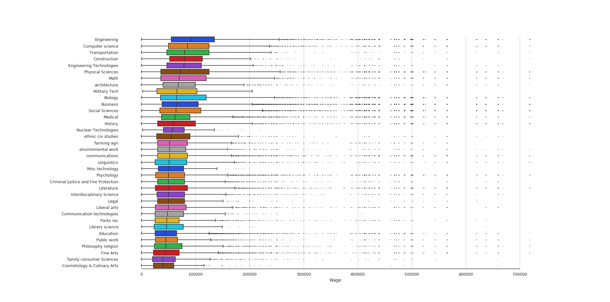
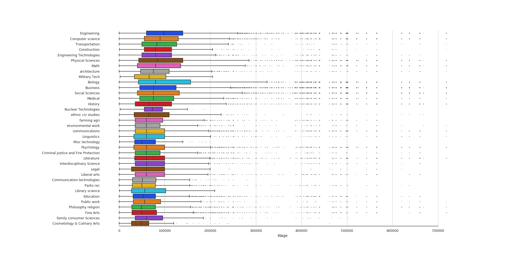
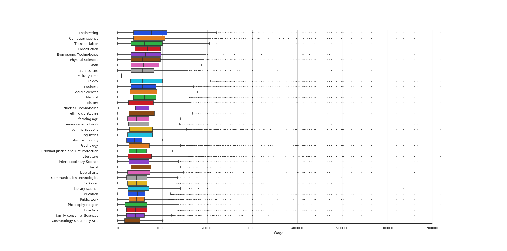
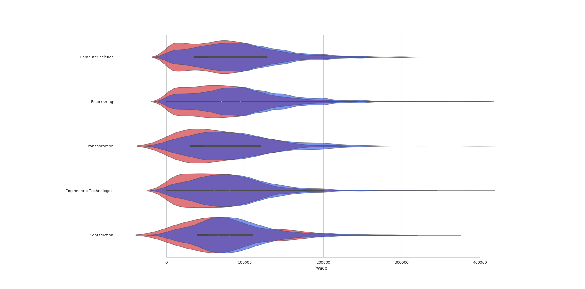

Report:
A defined hypothesis or prediction task, with clearly stated metrics for success:
We perform a series of hypothesis tests on linear regressions which relates worker sex to hourly wage and annual wage. The null hypothesis is that sex has no relationship with hourly wage (coefficient = 0). We will use an alpha level of 1%, meaning we reject our hypothesis if we attain a P-value lower than 0.01. In addition, we will regress wage on a set of variables: sex, years in industry, and educational attainment, hypothesis testing each again at the 1% significance level.
Why did you use this statistical test or ML algorithm? Which other tests did you consider or evaluate? How did you measure success or failure? Why that metric/value? What challenges did you face evaluating the model? Did you have to clean or restructure your data?
Our project concerns how sex impacts the professional success of people in various career and educational paths. Thus, it’s a crucial starting point to establish the relationship (or lack thereof) between sex and earnings. A t-test (computed using python’s statsmodels library) was a clear choice; it’s the standard way to test for a relationship and it our needs certainly fit its purpose. Performing the regression itself was quite simple, but some cleaning and manipulation of the data had to be done on the way. First, we removed a bunch of null fields. Second, we had to transform a number of our fields from categorical to quantitate; this was most important for our data on weeks worked per year, which was previously represented as an index. We needed this to approximate hourly wages.
What is your interpretation of the results? Do accept or deny the hypothesis, or are you satisfied with your prediction accuracy? For prediction projects, we expect you to argue why you got the accuracy/success metric you have. Intuitively, how do you react to the results? Are you confident in the results?
For the univariate regression, we got a line of best fit with the equation y = 60.754 - 14.97 * SEX, where y is hourly wages and SEX is a dummy variable, where 1 represents MALE and 2 FEMALE. We obtained a p-value P < .0001, so we are comfortably able to reject our null hypothesis.
For our multiple regression, we obtained the equation y = -141.63 -14.54*SEX + .0152*YOEP + 9.3437*SCHL, where YOEP is years of experience in the industry and SCHL is educational attainment level. Each 3 coefficients had P < .0001. Additionally, we obtained an F-statistic over 7,000 (p < .0001), which was redundant given the extreme significance of the t-tests. We reject the null hypothesis.
While we performed a two-sided test (instead of testing the notion that one’s sex being female has a negative impact on their wage), we can simply double our p-values to transform our test into a 1-sided one, which we still would easily find significant. Given the reputability of our source and the extreme significance of our test, we find this result very convincing, and we are quite confident in it.
For your visualization, why did you pick this graph? What alternative ways might you communicate the result? Where there any challenges visualizing the results, if so, then what where they? Will your visualization require text to provide context or is it standalone (either is fine, but it's recognize which type your visualization is)?
So for our visualization, we chose to use 2 different types of graphs. We used boxplots to visualize the datapoint distributions for different majors for all data points, as well as for different majors for both sexes. The reason we decided on a boxplot is that it is really easy to visualize the median as well as the spread of the data. We can tell at a glance at the whiskers and the boxes where the middle 50 percent of the datapoints lie, as well as how wide the spread of the data points are in the distribution. In boxplots, the boxes represent the middle 50 percentiles. We chose to use a violin plot for direct comparison between male and female wages in the top 5 earning majors. Violin plots are like box plots but are continous instead of discrete, from it we can see exactly how the distribution looks. The two violin plots are overlayed to emphasize the difference in the two distributions. Our visualization will require text to provide context, but it should also be easy to understand and visually appealing.
Full results + graphs (at least 1 stats/ml test and at least 1 visualization). Depending on your model/test/project we would ideally like you to show us your full process so we can evaluate how you conducted the test!
Overall distributions:

Overall male distributions:

Overall female distributions:

Top 5 major comparison (red=female, blue=male):

If you did a statistics test, are there any confounding trends or variables you might be observing?
There are a few factors that may lead to imprecision. Perhaps most significantly, we did not get an exact number of weeks worked by each person; instead, we approximated by taking the midpoint of each numerical range. Additionally, there is a possibility of some form of response bias, where people of one sex might fill out census data less accurately (or more generously) than the other. However, I think it is highly unlikely that these factors would have much impact on our results. However, when dealing with regression, it’s always worth noting that our results say nothing about causality; we can not attempt to explain the disparity in earnings using regression.
Discussion of visualization/explaining your results on a poster and a discussion of future directions.
We want to perform analysis on each major and their expected income, and then seperately model the expected income of each major with regards to male and female sexes. Using tools such as kmeans clustering, we hope to be able to see clear clusters form around majors and genders. We also want to use linear regression or neural networks to model these wage data points and see what impacts gender has on wage.